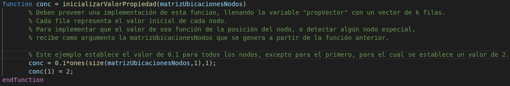
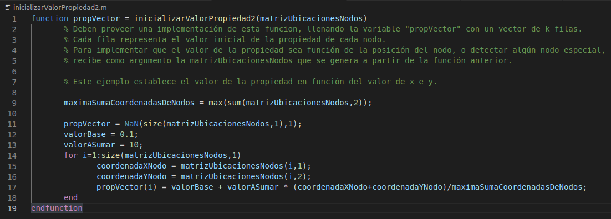

Esta función debe generar un vector de k elementos.
Cada fila representa el valor inicial de cada nodo.
Para implementar que el valor sea función de la posición del nodo, o detectar algún nodo especial, recibe como argumento la matrizUbicacionesNodos que se genera a partir de la función anterior.
Se la llama desde la linea 76 del archivo TableroQuimico.m
Ejemplo archivo inicializarValorPropiedad.m:
Ejemplo archivo inicializarValorPropiedad2.m:
